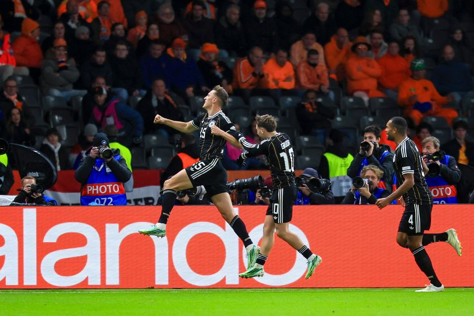

Alemania despierta ante Países Bajos para liderar su grupo y endosar la primera goleada a Xavi

El combinado germano dirigido por Klopp, la Francia de Zidane y Portugal o Dinamarca, serán los posibles rivales de España en los cuartos de final
A falta de que se concrete este martes el último grupo de la Nations League, España se asoma a unos cuartos de final con rivales durísimos. Después de que Francia venciera a Turquía el domingo y acabara como líder de su grupo, Alemania destrozó este lunes a Países Bajos (5-0) para robarle el liderato después de cuajar una fase regular muy discreta. El combinado alemán dirigido por Jürgen Klopp le endosó una goleada a la selección que comanda Xavi Hernández, que con un empate podría haber sido rival de la Roja. Grecia, la revelación de esta edición, se quedó a las puertas de la clasificación pese a derrotar a Serbia (1-0).